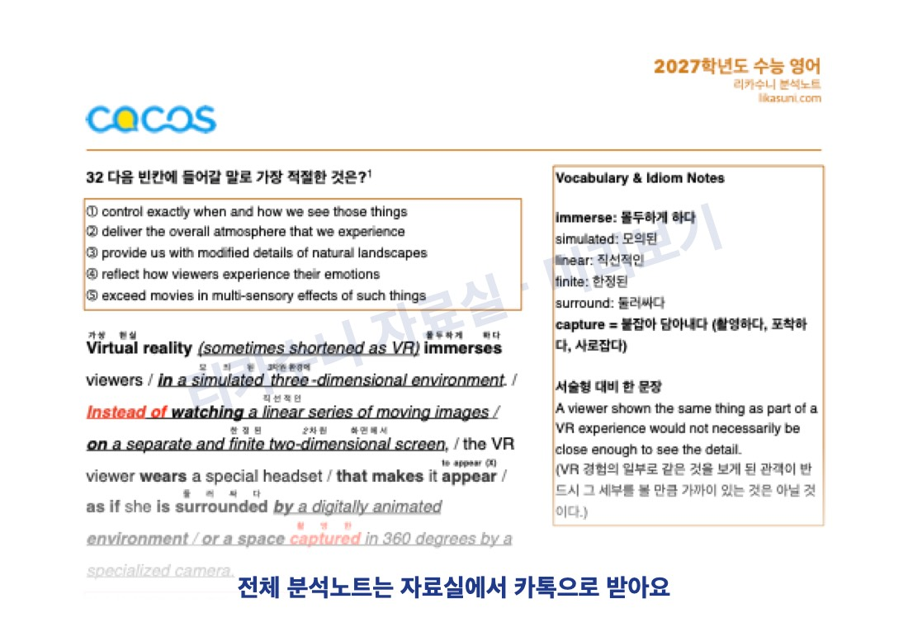

리카수니 분석노트 해설 · 이매동 코코스학원
2027 수능 영어 32번 빈칸 해설·분석이에요. (2027학년도 대학수학능력시험 영어 32번 · 빈칸 추론 · 정답 ① control exactly when and how we see those things, 2026년 11월 시행 수능)
정답 근거, 오답 거르는 법, 구문(make it appear as if · 과거분사 후치 수식 · not necessarily 부분 부정), 어휘를 정리했고 분석노트 전자책·pdf 보는 곳은 글 아래에 있어요.
안녕하세요, 이매동 코코스학원 리카수니 원장입니다.
학생 요청으로 만든 분석노트를 바탕으로 정리했어요. 시험지를 옆에 펴 놓고 보시면 더 잘 보여요.
| 한눈에 보는 정답 · 시험: 2027학년도 대학수학능력시험 영어 (2026년 11월 시행) · 번호: 32번 (다음 빈칸에 들어갈 말로 가장 적절한 것) · 정답: ① control exactly when and how we see those things (우리가 그것들을 언제 어떻게 보는지 정확히 통제하다) |
가상 현실(VR)과 영화를 비교한 글이에요.
흐름은 VR = 관객을 3차원 환경에 둘러싸이게 함 → 영화처럼 볼거리를 엄선해 줄 수 있음(공통점) → But 영화와 달리 '언제, 어떻게 볼지'는 통제 못 함(차이점) → 영화의 클로즈업 vs VR 관객은 다른 쪽을 보고 있을 수도 있음(예시)이에요.
| · 근거 1: Like a movie(영화처럼)로 공통점을 말한 뒤 But virtual reality cannot ___ 이 와요. 빈칸은 '영화는 되는데 VR은 안 되는 것'이에요. · 근거 2: 예시에서 영화는 클로즈업을 '특정한 순간에(at a particular moment)', '정확한 방식으로(in a precise way)' 보여 줘요. = when and how. · 근거 3: VR 관객은 그 세부가 나타난 순간에 다른 쪽을 보고 있을 수도 있어요. → 언제·어떻게 볼지를 정확히 통제할 수 없다는 ①이 정답이에요. |
| · ② 전체 분위기 전달 → VR은 360도 환경에 몰입시키니 분위기 전달은 오히려 잘해요. · ③ 자연 풍경의 변형된 세부 → 글에 나오지 않아요. · ④ 관객이 감정을 경험하는 방식 반영 → 본문의 emotional response 는 영화가 감정을 '만들어 낸다'는 말이에요. 단어만 걸린 함정이에요. · ⑤ 다감각 효과에서 영화를 능가 → 글은 우열이 아니라 '보는 시점 통제'의 차이를 말해요. 빈칸 문제는 Like A ~ But 구조가 보이면 But 뒤 '차이점'을 예시에서 그대로 찾아 오세요. |

▲ 2027 수능 영어 32번 빈칸 해설·분석 pdf 분석노트 미리보기
| 1) make it appear as if ~ (마치 ~인 것처럼 보이게 하다) / appear 자리에 to appear 는 틀려요 → a special headset that makes it appear as if she is surrounded by a digitally animated environment (2027 수능 32번) 2) instead of + -ing / 과거분사 후치 수식 a space captured in 360 degrees 3) provide A with B / 형용사적 to부정사 things to look at / 간접의문문 when and how ~ 4) 과거분사 후치 수식 A viewer shown the same thing ~ (진짜 동사는 would not be) 5) not necessarily (반드시 ~인 것은 아니다, 부분 부정) / enough to부정사 · 부분 부정: not + 전체를 뜻하는 말 (all, both, every, always, completely, necessarily …) |
| 영어 | 뜻 |
|---|---|
| immerse | 몰두하게 하다 |
| simulated | 모의된 |
| linear | 직선적인 |
| finite | 한정된 |
| surround | 둘러싸다 |
| capture | 붙잡아 담아내다 (촬영하다, 포착하다) |
| curate | 엄선하다 |
| engaging | 매력적인 |
| spectacular | 화려한, 장관의 |
| precise | 정확한 |
| convey | 전달하다 |
| emerge | 나타나다 |
| miss | 놓치다 |
| 서술형 대비 분석노트에 '서술형 대비 한 문장'(A viewer shown the same thing as part of a VR experience would not necessarily be close enough to see the detail. VR 경험의 일부로 같은 것을 보게 된 관객이 반드시 그 세부를 볼 만큼 가까이 있는 것은 아닐 것이다)과 영어 핵심 요약(Core Summary), 부분 부정 정리를 넣어 두었어요. |
| 📂 2027 수능 영어 32번 분석노트 전자책·pdf 보는 법 자료실에서 이 문항 분석노트를 전자책으로 바로 볼 수 있어요. (끊어 읽기·해석·구문·어휘 2쪽) 인쇄용 pdf 는 카카오 로그인 후 카톡으로 받을 수 있고, 다른 번호도 요청할 수 있어요. 2027 수능 영어 분석노트·변형문제·단어, 전과목 문제지·정답 pdf, 등급컷은 같은 페이지 위쪽 회차 메뉴에서 볼 수 있어요. ▶ 2027 수능 영어 32번 해설·전자책 https://data.likasuni.com/suneung/2027/eng/32/ |
Q. 2027 수능 영어 32번 빈칸 해설·분석 정답은?
A. ① control exactly when and how we see those things (우리가 그것들을 언제 어떻게 보는지 정확히 통제하다)
Q. 분석노트 pdf 는 어디서 받나요?
A. 리카수니 자료실(data.likasuni.com)에서 카카오 로그인 후 카톡으로 받을 수 있어요. 위 안내의 링크로 이동하세요.
이상 2027 수능 영어 32번 빈칸 해설·분석 pdf 정리였어요. 궁금한 점은 댓글로 남겨 주세요.
| 🏫 이매동 코코스학원 안내 분당 이매동 코코스학원은 초등·중등·고등 영어와 수학을 가르쳐요. 모의고사·수능특강·내신 대비가 궁금하시면 편하게 문의해 주세요. · 홈페이지: https://www.cocosedu.co.kr/ · 주소: 경기 성남시 분당구 판교로 476 2층 |
#2027수능영어 #2027수능영어32번 #2027수능영어분석 #수능영어32번 #수능영어pdf #2027수능영어해설 #2026수능영어 #2027학년도수능영어 #수능빈칸추론 #수능영어빈칸 #notnecessarily #부분부정 #영어분석노트 #이매동영어학원 #코코스학원 #리카수니